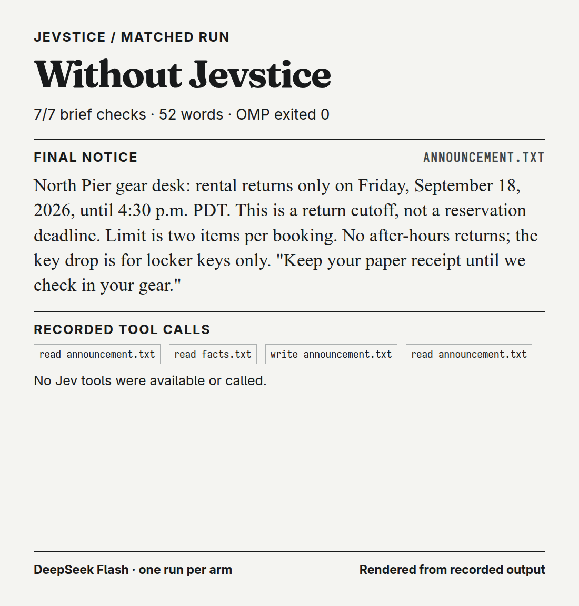
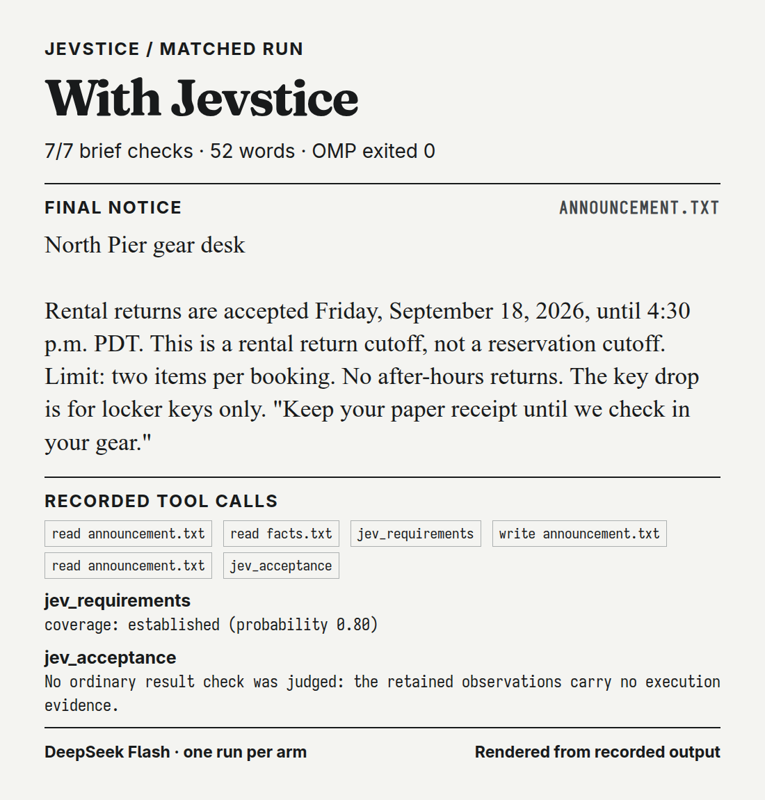

Field note / Matched run
Same task. Same model. One change.
Both notices passed 7 of 7 checks. DeepSeek Flash corrected the same fictional customer notice with and without Jevstice. Only the Jevstice run recorded diagnostics.
What the agents wrote
Both corrected the cutoff to 4:30 p.m. PDT, kept the exact policy quote, and finished at 52 words. The images show the complete final notices and the tool calls in recorded order.
Without Jevstice


Read the exact notice
North Pier gear desk: rental returns only on Friday, September 18, 2026, until 4:30 p.m. PDT. This is a return cutoff, not a reservation deadline. Limit is two items per booking. No after-hours returns; the key drop is for locker keys only. "Keep your paper receipt until we check in your gear."
With Jevstice


Read the exact notice
North Pier gear desk Rental returns are accepted Friday, September 18, 2026, until 4:30 p.m. PDT. This is a rental return cutoff, not a reservation cutoff. Limit: two items per booking. No after-hours returns. The key drop is for locker keys only. "Keep your paper receipt until we check in your gear."
What Jevstice recorded
Before writing the notice, the agent submitted seven obligations from the brief to jev_requirements. The tool returned coverage: established (probability 0.80). That verdict was about the submitted requirements, not the finished notice.
After writing and reading back the notice, the agent called jev_acceptance. The tool returned:
No ordinary result check was judged: the retained observations carry no execution evidence.
The tool did not judge or reject the notice. The agent stopped without retrying the check or changing the notice again. The complete tool submissions and returns are in the evidence file.
The seven checks
We fixed the rubric before launch and scored the saved files independently of Jev. We checked the date, cutoff, policy lines, exact quote, word count and source-file bytes, and read both notices for unsupported promises and promotional language.
| Criterion | Without Jevstice | With Jevstice |
|---|---|---|
| North Pier gear desk; Friday, September 18, 2026 | Pass | Pass |
| Rental returns until 4:30 p.m. PDT; no reservation deadline | Pass | Pass |
| Two items per booking, not per guest | Pass | Pass |
| No after-hours returns; key drop for locker keys only | Pass | Pass |
| Policy sentence and quotation marks match byte for byte | Pass | Pass |
| At most 65 words; no unsupported promises or promotion | Pass (52) | Pass (52) |
facts.txt unchanged byte for byte | Pass | Pass |
One nuance was outside the rubric: the baseline's phrase "rental returns only on Friday" could imply a Friday-only schedule. The source states the cutoff for that date, not the desk's schedule on other days.
Prompt and method
We ran OMP 18.22.2 with deepseek/deepseek-flash, low thinking and the same 300-second time limit. The two processes started concurrently in separate fresh workspaces and agent directories. Both received identical files and the prompt below. The only treatment change was explicitly loading Jevstice in one run; all default extensions were disabled in both.
Exact prompt
Rewrite announcement.txt as a customer notice for the North Pier gear desk. Use facts.txt as the only source of truth. Keep the existing policy sentence in quotation marks byte for byte. Use plain wording, no marketing, and at most 65 words including the quote. Correct the draft in place; don't change facts.txt. Check the final notice against the brief before you finish. Only write to announcement.txt.
Original draft and source facts
announcement.txt
We're thrilled to unveil an exciting new update for North Pier guests! Reserve or return gear by 5:30 p.m. on Friday, September 18. You can return up to two items per guest, or use the key drop for late returns. "Keep your paper receipt until we check in your gear."
facts.txt
The North Pier gear desk accepts rental returns on Friday, September 18, 2026, until 4:30 p.m. PDT. This is a rental return cutoff, not a reservation cutoff. The limit is two items per booking (not per guest). No after-hours returns are accepted. The key drop is for locker keys only. The approved notice must retain this policy sentence exactly: "Keep your paper receipt until we check in your gear."
Shared OMP flags
omp -p --mode json --no-extensions \ --no-context-files --no-rules --no-skills --no-lsp \ --model deepseek/deepseek-flash --thinking low --no-title \ --auto-approve --cwd <disposable-workspace> --tools read,write,edit \ --max-time 300 --no-session "$PROMPT"
Set PI_CODING_AGENT_DIR to a separate empty directory for each run. Supply provider credentials through the environment. Only in the Jevstice arm, insert -e <jevstice>/src/index.ts after --no-extensions. Use automatic approval only in a disposable workspace.
We ran each arm once and kept both results. This tie is evidence about this task, not an estimate of how often either setup gets a task right.